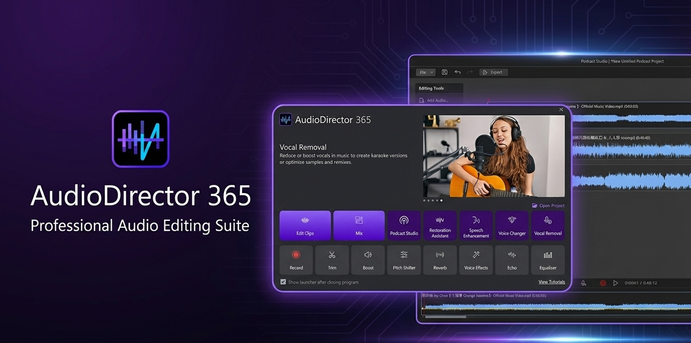
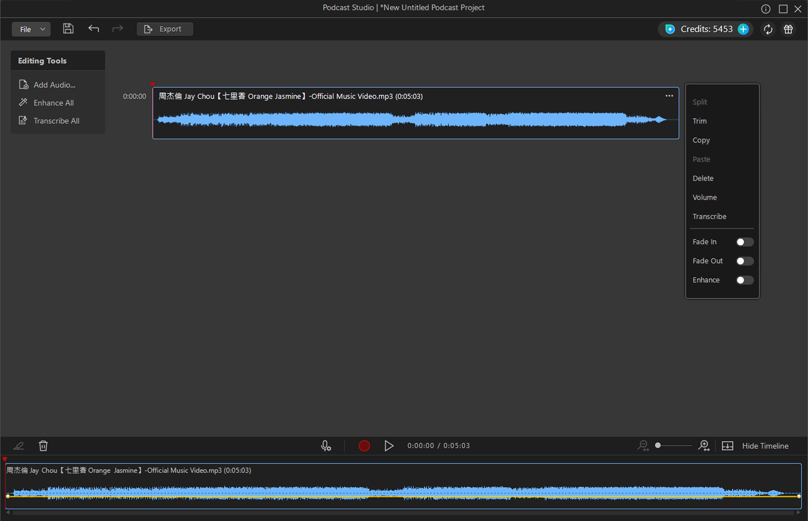

AudioDirector Podcast Studio — PM Case Study
AudioDirector
Podcast Studio
AI-Powered Podcast & Speech Recording Studio

Background
The podcast market has been growing rapidly, with more creators looking for accessible tools to produce professional-quality audio. As a product with strong audio editing capabilities, AudioDirector was well-positioned to capture this segment — but lacked a dedicated podcast workflow.
Podcast Studio was built to extend AudioDirector into voice-focused use cases and tap into this growing creator market.
Summary
Podcast Studio extends AudioDirector into voice-focused workflows, helping podcast creators produce professional-quality audio without professional equipment or technical expertise. It addresses three core challenges creators face: audio quality, editing efficiency, and content navigation — each solved by a dedicated AI-powered capability.
My Role
I owned the full execution — writing the PRD and functional specs, aligning with RD on technical feasibility, working with Design on UX flows, and driving the project across two phases until ship.
Reimagining Podcast Editing with AI-Driven Workflows

Workspace Design
The workspace is divided into three sections: Simple Timeline, Global Editing Panel, and Per-Clip Editing Panel, enabling users to perform quick edits through an intuitive timeline while retaining granular control for fine-tuning individual audio clips.

AI Speech Enhancement
Most creators don't have access to professional recording equipment — resulting in audio that sounds flat, noisy, or unclear. AI Speech Enhancement processes vocal recordings to improve clarity and presence, bringing the output closer to studio-quality sound without any hardware upgrade or manual EQ work.

Text-Based Editing
Finding a specific moment in a long podcast recording traditionally means scrubbing through waveforms by ear — slow and imprecise. Text-based editing converts speech into a searchable transcript, letting users locate, select, and delete audio directly through text. It turns a slow auditory search into a fast visual one, with support for SRT/TXT export and built-in search.

Automatic Pause Detection
Manually hunting for silence gaps in a long recording — dragging through waveforms one by one — is one of the most tedious parts of podcast editing. Automatic pause detection scans the entire recording and flags unnecessary silences, letting users review and remove them in bulk rather than one at a time, significantly reducing editing time.
Outcome
Self-Reflection
This was my first large 0–1 project after joining CyberLink, and I led it from start to finish — from early design ideas to defining requirements, working with UI, R&D, and QA, and finally getting the feature shipped. It expanded my scope from design into full product and project management ownership.
Along the way, I learned to constantly ask why — why this feature mattered, why a certain design made sense, and how it would actually be built. With tight timelines, I had to make real trade-offs instead of chasing a perfect solution, deciding what was blocking, what was a must-have, and what could wait.
Seeing the feature go live was incredibly satisfying, and knowing it contributed to 22% revenue growth validated the direction. It confirmed that I can own complex features end-to-end and ship real impact under real constraints.